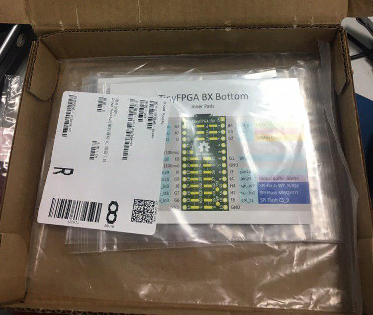

最近和網路上的朋友討論要弄個讀書會之類的來好好學習 FPGA，討論後的結果我們決定從 TinyFPGA BX 來開始進行。
也因此筆者就透過網路購買了 TinyFPGA BX 這款目前蠻紅的開源專案，來打算透過它從寫個簡易的 MCU 到製作自己的 SoC (前提是邏輯閘夠，這塊板子 只有 7680 個邏輯閘 可以使用)。
去哪邊買 TinyFPGA BX
我是到 CROWDSUPPLY 上的網站去購買，由於是順帶幫朋友們購買，因此我選的是 TinyFPGA BX Five-pack ($180 + $7) 這個組合，其中 $7 為運費。
以當時刷信用卡的結果，這邊刷了 NT $5883 元。
開箱文
由於我買的是 TinyFPGA BX Five-pack ($180 + $7) ，換算台幣後為 NT $5883 元，超過了新台幣 $5000 元，因此需要向國家繳納保護費。
這次繳交了新台幣 $297 元
因此總成本為 NT $5883 + $297 = NT $6180 (共五片) ， 大約一片要新台幣 $1236 元 。
剛收到的包裹，打開後是這個樣子的

每一包都有 I/O 說明與用防靜電袋裝著的 TinyFPGA BX，而防靜電袋上顯示了 QR code (我猜是流水號) 以及測試狀況
打開後可以發現到它真的非常小…..，這邊要注意的是， TinyFPGA BX 預設不會上排針的 ，因此如果你有需要的話，需要自己買料焊接上去
開箱文就到這邊~
下一步
下一步我會打算先試試看 GitHub 上的範例 ，上面將 picorv32 燒錄到 TinyFPGA BX 上讓其成為一個具有 RISC-V 指令集的微控器。
我們下一篇再見囉~